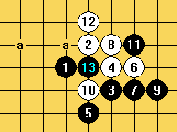
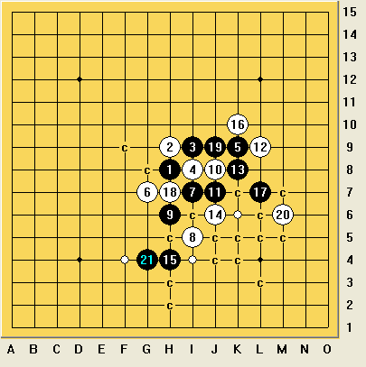

寂寞的夜晚 你可愿意与我共赏波罗的海的日出
#1 寂寞的夜晚 你可愿意与我共赏波罗的海的日出作者：屏蔽 发表时间：2013-8-8 18:50:16
爱五子棋网，爱五子棋网，各位观众朋友大家好，这里是2013年第十三届世界连珠锦标赛AT第4轮的直播现场。
日程已经进入第二个比赛日，还有20分钟，A组（AT）的12轮选手即将展开第4轮的厮杀。让我们紧密围观，拭目以待。
［ 伤情路同学于 2013-8-8 22:44:22 时花20金币送鲜花一朵］
［ 伤情路同学于 2013-8-8 22:44:22 时花20金币送鲜花一朵］
［ 伤情路同学于 2013-8-8 22:44:22 时花20金币送鲜花一朵］
［ 伤情路同学于 2013-8-8 22:44:22 时花20金币送鲜花一朵］
［ 伤情路同学于 2013-8-8 22:44:22 时花20金币送鲜花一朵］
［ 伤情路同学于 2013-8-8 22:44:22 时花20金币送鲜花一朵］
［ 伤情路同学于 2013-8-8 22:44:22 时花20金币送鲜花一朵］
［ 伤情路同学于 2013-8-8 22:44:22 时花20金币送鲜花一朵］
#2 Re:寂寞的夜晚 你可愿意与我共赏波罗的海的日出作者：屏蔽 发表时间：2013-8-8 18:55:19
让我们先来看看目前的积分情况：
坦克3分了！
冈部宽、陈可汗2.5分！
Sushkov、Aivo、大角有希2分！
Salnikov1.5分！
冬瓜、兰志仁1分！
Epifanov0.5分！
小马丁、汪清清0分！
#3 Re:寂寞的夜晚 你可愿意与我共赏波罗的海的日出作者：屏蔽 发表时间：2013-8-8 18:57:15
坦克凭借浩然正气攻出了一片天地 一往无前三连胜！
亚洲两位高手紧随其后！
中国军团简直就是一坨杯具啊！仅有的2分都是内战得的……
#4 Re:寂寞的夜晚 你可愿意与我共赏波罗的海的日出作者：南京小飞机 发表时间：2013-8-8 18:59:51
 七界传说……
七界传说……#5 Re:寂寞的夜晚 你可愿意与我共赏波罗的海的日出作者：屏蔽 发表时间：2013-8-8 19:02:31
下轮看点！
★★★ 大角战Aivo！
★ 什么夫战什么夫！
★★★★ 冈部战Sushkov！
★★☆ 冬瓜战马丁！
★★★★ 陈科翰战坦克！
5★满分 ★为关注度 ☆为中国队额外关注
#6 Re:寂寞的夜晚 你可愿意与我共赏波罗的海的日出作者：屏蔽 发表时间：2013-8-8 19:04:47
大角战Aivo 冈部战Sushkov 谁将上升和挑战第一集团？
陈科翰战坦克 谁将会激发真正霸气？
状态不良冬瓜 会否被爆冷？
中国最后的内战结果如何？汪清清能否打破0分尴尬？
#7 Re:寂寞的夜晚 你可愿意与我共赏波罗的海的日出作者：屏蔽 发表时间：2013-8-8 19:06:03
现在是北京时间19:11 塔林当地时间12:11
比赛还有4分钟开始！
#8 Re:寂寞的夜晚 你可愿意与我共赏波罗的海的日出作者：小丸.net 发表时间：2013-8-8 19:09:30
棋谱还得要40分钟才能传。。。继续坐等。。。。期待清清做掉兰志仁。
哦对了，楼主，你能不能先吃了药再来做直播。
#9 Re:寂寞的夜晚 你可愿意与我共赏波罗的海的日出作者：屏蔽 发表时间：2013-8-8 19:09:55
我的正气已经无药可救！#10 Re:寂寞的夜晚 你可愿意与我共赏波罗的海的日出作者：屏蔽 发表时间：2013-8-8 19:10:22
时间到！比赛正式开始了噢噢噢噢噢噢哈哈哈哈哈哈！#11 Re:寂寞的夜晚 你可愿意与我共赏波罗的海的日出作者：釣鱼岛岛主 发表时间：2013-8-8 19:10:22
期待汪清清首胜#12 Re:寂寞的夜晚 你可愿意与我共赏波罗的海的日出作者：屏蔽 发表时间：2013-8-8 19:11:01
让我们先默默祝福中国队的三个人都能赛出水平赛出风格 顺便给曹冬加个油#13 Re:寂寞的夜晚 你可愿意与我共赏波罗的海的日出作者：屏蔽 发表时间：2013-8-8 19:11:32
现在官网上暂时还没有直播。#14 re:寂寞的夜晚 你可愿意与我共赏波罗的海的日出作者：小丸.net 发表时间：2013-8-8 19:12:48
等吧，要40分钟。#15 Re:寂寞的夜晚 你可愿意与我共赏波罗的海的日出作者：小红眼镜 发表时间：2013-8-8 19:13:14
 前几楼才有金币。赶紧赚几个
前几楼才有金币。赶紧赚几个#16 Re:寂寞的夜晚 你可愿意与我共赏波罗的海的日出作者：小红眼镜 发表时间：2013-8-8 19:13:52
 再来一发
再来一发#17 Re:寂寞的夜晚 你可愿意与我共赏波罗的海的日出作者：屏蔽 发表时间：2013-8-8 19:14:07
请大家关注：http://www.renju.net/
直播开右边小红色粗体字。当然，得有才行。
#18 Re:寂寞的夜晚 你可愿意与我共赏波罗的海的日出作者：屏蔽 发表时间：2013-8-8 19:15:09
刚才有人在群里告诉我过了15楼就没有金币了。
但是我的浩然正气怎么能被区区金币所困扰！
#19 Re:寂寞的夜晚 你可愿意与我共赏波罗的海的日出作者：屏蔽 发表时间：2013-8-8 19:16:31
可能有的人还不清楚本次AT比赛的赛制：
12人打11轮单循环 用时135分钟/每手棋+30秒
#20 re:寂寞的夜晚 你可愿意与我共赏波罗的海的日出作者：小丸.net 发表时间：2013-8-8 19:16:35
屏蔽，趁现在有空，麻烦你评一下第三轮清清对陈科瀚的对局。。。#21 Re:寂寞的夜晚 你可愿意与我共赏波罗的海的日出作者：屏蔽 发表时间：2013-8-8 19:17:02
骚等 我先把目前的正气散发完#22 Re:寂寞的夜晚 你可愿意与我共赏波罗的海的日出作者：屏蔽 发表时间：2013-8-8 19:17:34
待会我侄女要来我家玩 从美国来的5岁小loli#23 re:寂寞的夜晚 你可愿意与我共赏波罗的海的日出作者：小丸.net 发表时间：2013-8-8 19:18:07
记得拍张照片传过来#24 Re:寂寞的夜晚 你可愿意与我共赏波罗的海的日出作者：屏蔽 发表时间：2013-8-8 19:18:14
根据用时
80手的和棋要下多长时间呢？答案是，可能超过300分钟！
#25 Re:寂寞的夜晚 你可愿意与我共赏波罗的海的日出作者：小丸.net 发表时间：2013-8-8 19:18:55
我记得昨天比赛结束，已经快凌晨一点了【北京时间】
#26 Re:寂寞的夜晚 你可愿意与我共赏波罗的海的日出作者：釣鱼岛岛主 发表时间：2013-8-8 19:18:57
我擦 正气撒发完之后就迎接美国来的侄女小loli啊#27 Re:寂寞的夜晚 你可愿意与我共赏波罗的海的日出作者：屏蔽 发表时间：2013-8-8 19:19:12
本人有幸在正式比赛中下出过4、5个小时的对局 即便有正气加持 也不免感到劳累
这不单是在考研选手的技术 更是精神和体力的阿嚏！……
#28 Re:寂寞的夜晚 你可愿意与我共赏波罗的海的日出作者：屏蔽 发表时间：2013-8-8 19:19:41
更是精神和体力的巨大考验！#29 Re:寂寞的夜晚 你可愿意与我共赏波罗的海的日出作者：屏蔽 发表时间：2013-8-8 19:20:09
不好意思刚才我正在使用语音录入 不太稳定 现在换回来#30 Re:寂寞的夜晚 你可愿意与我共赏波罗的海的日出作者：小丸.net 发表时间：2013-8-8 19:21:29
楼上你感冒了。。。。快吃药。#31 Re:寂寞的夜晚 你可愿意与我共赏波罗的海的日出作者：釣鱼岛岛主 发表时间：2013-8-8 19:22:48
正气散发完之后 有点虚而已，不是什么感冒。
#32 Re:寂寞的夜晚 你可愿意与我共赏波罗的海的日出作者：屏蔽 发表时间：2013-8-8 19:22:49
她来了。#33 Re:寂寞的夜晚 你可愿意与我共赏波罗的海的日出作者：屏蔽 发表时间：2013-8-8 19:23:20
没事我们不要管loli的事情了反正我都tmd青灯古佛了，让我们回到直播现场。#34 Re:寂寞的夜晚 你可愿意与我共赏波罗的海的日出作者：屏蔽 发表时间：2013-8-8 19:23:57
直播仍然没有开始。大家可以想象一下选手们激烈对局的场面。#35 Re:寂寞的夜晚 你可愿意与我共赏波罗的海的日出作者：屏蔽 发表时间：2013-8-8 19:24:28
刚才我们说到哪来着。#36 re:寂寞的夜晚 你可愿意与我共赏波罗的海的日出作者：小丸.net 发表时间：2013-8-8 19:25:24
说到你青灯古佛了，你解释一下什么意思。#37 Re:寂寞的夜晚 你可愿意与我共赏波罗的海的日出作者：屏蔽 发表时间：2013-8-8 19:26:45
嗯……绿色的。#38 Re:寂寞的夜晚 你可愿意与我共赏波罗的海的日出作者：屏蔽 发表时间：2013-8-8 19:27:10
OK我们不要再讨论小loli的kk颜色问题了 我都被你们带坏了！#39 Re:寂寞的夜晚 你可愿意与我共赏波罗的海的日出作者：屏蔽 发表时间：2013-8-8 19:28:03
今天的晚饭是炸薯条和炸酱面 是两种比较类似的食物 不过我没有吃薯条#40 re:寂寞的夜晚 你可愿意与我共赏波罗的海的日出作者：小丸.net 发表时间：2013-8-8 19:28:46
我吃的炒拉面和布丁奶茶。。。。#41 Re:寂寞的夜晚 你可愿意与我共赏波罗的海的日出作者：屏蔽 发表时间：2013-8-8 19:29:04
据前线，啊不是，前方通讯，汪清清这几盘棋耗时都很长 她表示很虚#42 Re:寂寞的夜晚 你可愿意与我共赏波罗的海的日出作者：屏蔽 发表时间：2013-8-8 19:29:52
ok 目前还有时间 我们来评价一下上一局汪清清是如何输给可汗的#43 re:寂寞的夜晚 你可愿意与我共赏波罗的海的日出作者：小丸.net 发表时间：2013-8-8 19:30:20
忘了买巧克力了？还你没人给她做心理辅导？#44 re:寂寞的夜晚 你可愿意与我共赏波罗的海的日出作者：小丸.net 发表时间：2013-8-8 19:31:41
翻盘啊。。。。。。。。。。。。。。。。［此帖子已被 小丸.net 在 2013-8-8 19:32:27 编辑过］
#45 Re:寂寞的夜晚 你可愿意与我共赏波罗的海的日出作者：屏蔽 发表时间：2013-8-8 19:31:44
这是汪清清对陈科翰的全谱
#46 Re:寂寞的夜晚 你可愿意与我共赏波罗的海的日出作者：屏蔽 发表时间：2013-8-8 19:32:33
关于巧克力的问题只是我个人经验 让我们相信前线战士的能力#47 Re:寂寞的夜晚 你可愿意与我共赏波罗的海的日出作者：屏蔽 发表时间：2013-8-8 19:33:30
刚才我二姨说我肩膀太宽 显得我个矮 卧槽#48 Re:寂寞的夜晚 你可愿意与我共赏波罗的海的日出作者：屏蔽 发表时间：2013-8-8 19:34:17
其实我当时和她聊天的时候 她不知道该怎么开局
我说我对陈科翰也不太熟悉
#49 Re:寂寞的夜晚 你可愿意与我共赏波罗的海的日出作者：屏蔽 发表时间：2013-8-8 19:34:42
所以我就问她她有没有什么想走的变化#50 Re:寂寞的夜晚 你可愿意与我共赏波罗的海的日出作者：屏蔽 发表时间：2013-8-8 19:35:33
她说金星四打 当时我就灵光一闪 铿锵有力地说：#51 Re:寂寞的夜晚 你可愿意与我共赏波罗的海的日出作者：釣鱼岛岛主 发表时间：2013-8-8 19:35:52
5000金币赌兰志仁对汪清清开溪月 小丸子你赌不赌#52 Re:寂寞的夜晚 你可愿意与我共赏波罗的海的日出作者：屏蔽 发表时间：2013-8-8 19:36:02
“好！”#53 Re:寂寞的夜晚 你可愿意与我共赏波罗的海的日出作者：屏蔽 发表时间：2013-8-8 19:36:25
我的侄女英文名叫Berka#54 Re:寂寞的夜晚 你可愿意与我共赏波罗的海的日出作者：小红眼镜 发表时间：2013-8-8 19:36:44
这个帖子。是屏蔽的自白书 嘛。告白书也行。
嘛。告白书也行。#55 re:寂寞的夜晚 你可愿意与我共赏波罗的海的日出作者：小丸.net 发表时间：2013-8-8 19:36:48
不赌。。。。。。我只跟你3000金币赌兰志仁在35手以内【含35手】干掉清清。。。。。35以内赢了我给你3000。#56 Re:寂寞的夜晚 你可愿意与我共赏波罗的海的日出作者：屏蔽 发表时间：2013-8-8 19:37:28
大家知道 汪清清这名选手 是敢于进攻 善于进攻 拼命进攻的类型#57 re:寂寞的夜晚 你可愿意与我共赏波罗的海的日出作者：小丸.net 发表时间：2013-8-8 19:37:33
我总觉得有人要“在一起”了#58 Re:寂寞的夜晚 你可愿意与我共赏波罗的海的日出作者：釣鱼岛岛主 发表时间：2013-8-8 19:37:44
你个2货 白痴#59 Re:寂寞的夜晚 你可愿意与我共赏波罗的海的日出作者：屏蔽 发表时间：2013-8-8 19:37:50
可谓棋场上的女汉子！#60 Re:寂寞的夜晚 你可愿意与我共赏波罗的海的日出作者：屏蔽 发表时间：2013-8-8 19:38:26
艹 我怎么觉得我的经验不增反减#61 Re:寂寞的夜晚 你可愿意与我共赏波罗的海的日出作者：小红眼镜 发表时间：2013-8-8 19:38:34
 话说，从你们聊了几楼，我感觉。。论坛貌似很不适应。。。
话说，从你们聊了几楼，我感觉。。论坛貌似很不适应。。。#62 Re:寂寞的夜晚 你可愿意与我共赏波罗的海的日出作者：屏蔽 发表时间：2013-8-8 19:39:00
好 没问题 经验还在增加。#63 Re:寂寞的夜晚 你可愿意与我共赏波罗的海的日出作者：釣鱼岛岛主 发表时间：2013-8-8 19:39:26
卧槽 屏蔽你是暗示本神必败喽#64 Re:寂寞的夜晚 你可愿意与我共赏波罗的海的日出作者：屏蔽 发表时间：2013-8-8 19:39:36
61楼这是因为你的版聊实力太弱！#65 Re:寂寞的夜晚 你可愿意与我共赏波罗的海的日出作者：小红眼镜 发表时间：2013-8-8 19:39:36
非常不利于交流。效率低下。#66 Re:寂寞的夜晚 你可愿意与我共赏波罗的海的日出作者：屏蔽 发表时间：2013-8-8 19:40:14
你根本不知道！吾等水货是如何在1秒刷新5楼的论坛中进行版聊的！你不懂啊！#67 Re:寂寞的夜晚 你可愿意与我共赏波罗的海的日出作者：屏蔽 发表时间：2013-8-8 19:40:35
我们刚才说到哪了#68 Re:寂寞的夜晚 你可愿意与我共赏波罗的海的日出作者：屏蔽 发表时间：2013-8-8 19:41:06
对 我们说到女汉子的问题了#69 Re:寂寞的夜晚 你可愿意与我共赏波罗的海的日出作者：小红眼镜 发表时间：2013-8-8 19:41:21
 太艰辛了。这个还得有网速保障。
太艰辛了。这个还得有网速保障。#70 re:寂寞的夜晚 你可愿意与我共赏波罗的海的日出作者：小丸.net 发表时间：2013-8-8 19:41:40
我还记得那时候玩西祠胡同。。。。一天刷几百贴的。#71 Re:寂寞的夜晚 你可愿意与我共赏波罗的海的日出作者：屏蔽 发表时间：2013-8-8 19:41:52
这导致了一个问题 也就是她在执白防御 比较被动的情况下 变得无所适从
她会在进攻的欲望与防守的现实之夹缝中自寻死路
#72 Re:寂寞的夜晚 你可愿意与我共赏波罗的海的日出作者：屏蔽 发表时间：2013-8-8 19:42:34
知道第一轮她怎么输给曹冬的吗？就是因为曹冬执黑防守控制了两下 她就崩溃了#73 re:寂寞的夜晚 你可愿意与我共赏波罗的海的日出作者：小丸.net 发表时间：2013-8-8 19:42:52
上面的25就是印证了自寻死路这一点。#74 Re:寂寞的夜晚 你可愿意与我共赏波罗的海的日出作者：屏蔽 发表时间：2013-8-8 19:43:25
所以 这个金星四打 就是为了勾引陈科翰让汪清清执黑 我在万里之外设下的一个局#75 Re:寂寞的夜晚 你可愿意与我共赏波罗的海的日出作者：屏蔽 发表时间：2013-8-8 19:44:07
大家知道 上一届世锦赛 冬瓜祭出金星和棋大定 令众人为之一振！#76 re:寂寞的夜晚 你可愿意与我共赏波罗的海的日出作者：小丸.net 发表时间：2013-8-8 19:44:23
万里之外的陈科瀚怎么也没想到，给他下套的不是汪清清，而是屏蔽李一。。。。#77 Re:寂寞的夜晚 你可愿意与我共赏波罗的海的日出作者：屏蔽 发表时间：2013-8-8 19:44:34
小丸你赶快把“返回主题”返回到最后一页 这样效率太低#78 Re:寂寞的夜晚 你可愿意与我共赏波罗的海的日出作者：屏蔽 发表时间：2013-8-8 19:45:28
金星和棋大定就不管了 大家可以自己查查
这个定式的关键 是白棋主导变化 也就是说 陈科翰忌惮这个问题 一定会让自己执白 选择不同的变化
#79 Re:寂寞的夜晚 你可愿意与我共赏波罗的海的日出作者：釣鱼岛岛主 发表时间：2013-8-8 19:45:35
貌似没套住 呵呵#80 Re:寂寞的夜晚 你可愿意与我共赏波罗的海的日出作者：屏蔽 发表时间：2013-8-8 19:45:56
所以 如我所料 陈科翰没有交换！#81 Re:寂寞的夜晚 你可愿意与我共赏波罗的海的日出作者：屏蔽 发表时间：2013-8-8 19:47:49
其实我的本意是让汪清清积极地选择这个变化 走得有创意一点 没想到陈科翰没有选择这个打点 欧卡西捏~！
#82 Re:寂寞的夜晚 你可愿意与我共赏波罗的海的日出作者：屏蔽 发表时间：2013-8-8 19:48:24
明天是我侄女的生日 让我们大家一起来祝贺她［ 釣鱼岛岛主同学于 2013-8-8 19:49:18 时花20金币送鲜花一朵］
#83 Re:寂寞的夜晚 你可愿意与我共赏波罗的海的日出作者：屏蔽 发表时间：2013-8-8 19:49:58
ok 让我们回到实战：
我本以为她会走这个7继续强攻的 不过可能是她终于肯正视一下自己的防守问题了 选择得很柔和 很好！
#84 Re:寂寞的夜晚 你可愿意与我共赏波罗的海的日出作者：屏蔽 发表时间：2013-8-8 19:50:55
黑棋控制外势 好！
#85 Re:寂寞的夜晚 你可愿意与我共赏波罗的海的日出作者：屏蔽 发表时间：2013-8-8 19:51:30
现在renju.net有一盘直播棋谱 不过大家不用紧张 不是AT的#86 Re:寂寞的夜晚 你可愿意与我共赏波罗的海的日出作者：屏蔽 发表时间：2013-8-8 19:52:46
中盘的第一次定型。让我们来分析一下这个局面：
#87 Re:寂寞的夜晚 你可愿意与我共赏波罗的海的日出作者：小丸.net 发表时间：2013-8-8 19:53:31
16走18怎么样。。。。#88 Re:寂寞的夜晚 你可愿意与我共赏波罗的海的日出作者：屏蔽 发表时间：2013-8-8 19:54:13
黑棋在左上有相当的优势#89 Re:寂寞的夜晚 你可愿意与我共赏波罗的海的日出作者：屏蔽 发表时间：2013-8-8 19:55:02
白必胜 看来16-18是好手！
#90 Re:寂寞的夜晚 你可愿意与我共赏波罗的海的日出作者：屏蔽 发表时间：2013-8-8 19:55:54
怎样的优势呢？可惜就是没有VCT 一手做死的程度。#91 Re:寂寞的夜晚 你可愿意与我共赏波罗的海的日出作者：屏蔽 发表时间：2013-8-8 19:57:13
黑棋似乎在下方也有些东西
白棋似乎有个小先手 如何抉择呢？L9似乎是最积极的手段？
#92 Re:寂寞的夜晚 你可愿意与我共赏波罗的海的日出作者：釣鱼岛岛主 发表时间：2013-8-8 19:57:29
伤情路 天鹜 潇洒 陈国良 不明飞行物 烟雨淋晨尘 weigui
看到此贴你们怎么不说点什么呢
#93 re:寂寞的夜晚 你可愿意与我共赏波罗的海的日出作者：小丸.net 发表时间：2013-8-8 19:58:15
我在看棋的时候算过这个16手。觉得还可以，跳16也算过，也还行。。。。。。OVER#94 Re:寂寞的夜晚 你可愿意与我共赏波罗的海的日出作者：屏蔽 发表时间：2013-8-8 19:58:35
陈科翰略带先手地走了攻防兼备的手段。
#95 Re:寂寞的夜晚 你可愿意与我共赏波罗的海的日出作者：屏蔽 发表时间：2013-8-8 19:59:17
这里我的第一考虑是21-F9继续做大优势#96 re:寂寞的夜晚 你可愿意与我共赏波罗的海的日出作者：小丸.net 发表时间：2013-8-8 19:59:27
可惜这个20，陈科瀚完全忽略了黑棋在下面的直接进攻。。。#97 Re:寂寞的夜晚 你可愿意与我共赏波罗的海的日出作者：屏蔽 发表时间：2013-8-8 19:59:58
消灭白棋的连接 自己继续占据先手 这他喵的稳赚不赔啊！#98 Re:寂寞的夜晚 你可愿意与我共赏波罗的海的日出作者：屏蔽 发表时间：2013-8-8 20:00:49
不过汪清清对于进攻的感觉确实敏锐！21撸起！
#99 Re:寂寞的夜晚 你可愿意与我共赏波罗的海的日出作者：屏蔽 发表时间：2013-8-8 20:01:31
22唯一的强防。以下？……
#100 re:寂寞的夜晚 你可愿意与我共赏波罗的海的日出作者：小丸.net 发表时间：2013-8-8 20:01:44
这个21经观战的同学计算，必胜！！！！！！！！！！！！！！！！！！！#101 Re:寂寞的夜晚 你可愿意与我共赏波罗的海的日出作者：屏蔽 发表时间：2013-8-8 20:01:57
复杂的黑必胜！
#102 Re:寂寞的夜晚 你可愿意与我共赏波罗的海的日出作者：小丸.net 发表时间：2013-8-8 20:02:42
可是就在这时候。。。。。。#103 Re:寂寞的夜晚 你可愿意与我共赏波罗的海的日出作者：屏蔽 发表时间：2013-8-8 20:03:31
很遗憾 汪清清没有算出这路必胜
不过 我可以不夸张地说 全中国目算能够地毯这个22的 也不超过10个人 能边走边胜的 也不会超过20人
#104 re:寂寞的夜晚 你可愿意与我共赏波罗的海的日出作者：小丸.net 发表时间：2013-8-8 20:04:24
你在为汪清清开脱么。。。。#105 Re:寂寞的夜晚 你可愿意与我共赏波罗的海的日出作者：屏蔽 发表时间：2013-8-8 20:05:26
更加苦逼的是 汪清清误算了另一路走法为黑必胜：
黑31大大咧咧 但白32防御精确！唉！
#106 Re:寂寞的夜晚 你可愿意与我共赏波罗的海的日出作者：屏蔽 发表时间：2013-8-8 20:05:44
牡丹花下死 做鬼也风流！#107 re:寂寞的夜晚 你可愿意与我共赏波罗的海的日出作者：小丸.net 发表时间：2013-8-8 20:06:17
这时黑棋已经没有了胜。。。。。。如果这时候再回头应该还不算晚。至少可以保和#108 Re:寂寞的夜晚 你可愿意与我共赏波罗的海的日出作者：屏蔽 发表时间：2013-8-8 20:07:52
以下黑棋挣扎了几手，想必也是时间压力，遭遇了困境，即便没有失误速败，左下和右上的优势 黑棋也不可能兼顾了
#109 Re:寂寞的夜晚 你可愿意与我共赏波罗的海的日出作者：釣鱼岛岛主 发表时间：2013-8-8 20:08:12
白棋杀机四伏 和你妹啊和#110 Re:寂寞的夜晚 你可愿意与我共赏波罗的海的日出作者：小红眼镜 发表时间：2013-8-8 20:08:38
毛线。这时候即使回防，能不能和也是看对方脸色。。#111 re:寂寞的夜晚 你可愿意与我共赏波罗的海的日出作者：小丸.net 发表时间：2013-8-8 20:09:07
就这样，倒霉蛋陈科瀚不但拿到了宝贵一分，而且戴上了幸运帽。。。。。#112 Re:寂寞的夜晚 你可愿意与我共赏波罗的海的日出作者：屏蔽 发表时间：2013-8-8 20:09:51
成功的布局策略 顺利进入中盘 甚至有VCT的节奏 但最终误算！就是这样的一盘棋 陈科翰坚挺的好局 汪清清的遗憾 唉 生活就是这样
0:1 汪清清迎来三连败
#113 Re:寂寞的夜晚 你可愿意与我共赏波罗的海的日出作者：屏蔽 发表时间：2013-8-8 20:10:26
苦逼啊！#114 re:寂寞的夜晚 你可愿意与我共赏波罗的海的日出作者：小丸.net 发表时间：2013-8-8 20:11:06
这时候钓鱼岛主这个混蛋还要让清清输第四盘。。。所以，我忍无可忍要和他赌一场。。。。。#115 Re:寂寞的夜晚 你可愿意与我共赏波罗的海的日出作者：屏蔽 发表时间：2013-8-8 20:11:08
在这里 我只想说一句话#116 Re:寂寞的夜晚 你可愿意与我共赏波罗的海的日出作者：虎哥 发表时间：2013-8-8 20:11:36
为什么放弃治疗#117 Re:寂寞的夜晚 你可愿意与我共赏波罗的海的日出作者：屏蔽 发表时间：2013-8-8 20:13:11
小萝莉爬到了我的床上 嗯不是这句#118 Re:寂寞的夜晚 你可愿意与我共赏波罗的海的日出作者：屏蔽 发表时间：2013-8-8 20:13:39
不行这样我迟早会犯罪的 也不是这句#119 Re:寂寞的夜晚 你可愿意与我共赏波罗的海的日出作者：小红眼镜 发表时间：2013-8-8 20:13:59
爱在心口难开#120 Re:寂寞的夜晚 你可愿意与我共赏波罗的海的日出作者：小丸.net 发表时间：2013-8-8 20:14:15
---------------------------------------------
插播一条广告：爱网医院上三楼,有事你找陈教授!难言之隐,正气无救,随时看了随时走！
---------------------------------------------
#121 Re:寂寞的夜晚 你可愿意与我共赏波罗的海的日出作者：屏蔽 发表时间：2013-8-8 20:14:19
绿色！ 也不是这句……#122 re:寂寞的夜晚 你可愿意与我共赏波罗的海的日出作者：小丸.net 发表时间：2013-8-8 20:15:06
绿色的小内内么~~~~~#123 Re:寂寞的夜晚 你可愿意与我共赏波罗的海的日出作者：釣鱼岛岛主 发表时间：2013-8-8 20:15:10
我擦 说的我现在好想汪清清能剁了兰志仁#124 Re:寂寞的夜晚 你可愿意与我共赏波罗的海的日出作者：釣鱼岛岛主 发表时间：2013-8-8 20:16:28
小丸子你这张欠抽的嘴啊
#125 re:寂寞的夜晚 你可愿意与我共赏波罗的海的日出作者：小丸.net 发表时间：2013-8-8 20:17:04
那你不问问小红眼镜。。。。。#126 Re:寂寞的夜晚 你可愿意与我共赏波罗的海的日出作者：屏蔽 发表时间：2013-8-8 20:17:52
小丸.net(5050849) 16:10:08
这种局面清清杀不出？开什么玩笑
小红眼镜(61536408) 16:33:49
VCT的节奏。。想崩估计难。。
小丸.net(5050849) 16:34:08
这个黑杀连我都能算。。。
你们俩出来面对！对！就是这句！
#127 Re:寂寞的夜晚 你可愿意与我共赏波罗的海的日出作者：屏蔽 发表时间：2013-8-8 20:18:29
我觉得我马上就要犯罪了……大家救救我……#128 Re:寂寞的夜晚 你可愿意与我共赏波罗的海的日出作者：小红眼镜 发表时间：2013-8-8 20:19:07
 毛线。感情上支持谁跟理性的下注不冲突。
毛线。感情上支持谁跟理性的下注不冲突。#129 Re:寂寞的夜晚 你可愿意与我共赏波罗的海的日出作者：屏蔽 发表时间：2013-8-8 20:20:12
他喵的 我的床有这么舒服么 不就是张普通的屌丝床么#130 Re:寂寞的夜晚 你可愿意与我共赏波罗的海的日出作者：小丸.net 发表时间：2013-8-8 20:20:38
#131 Re:寂寞的夜晚 你可愿意与我共赏波罗的海的日出作者：屏蔽 发表时间：2013-8-8 20:21:36
好 正好她走了 我们回到直播现场 你们不要再聊loli的问题了！#132 Re:寂寞的夜晚 你可愿意与我共赏波罗的海的日出作者：屏蔽 发表时间：2013-8-8 20:22:31
米娜桑！现在renju.net已经有直播了。#133 re:寂寞的夜晚 你可愿意与我共赏波罗的海的日出作者：小丸.net 发表时间：2013-8-8 20:22:35
你能把持得住么。。。要不要我帮你。#134 Re:寂寞的夜晚 你可愿意与我共赏波罗的海的日出作者：屏蔽 发表时间：2013-8-8 20:23:14
我说我刚才好像忘了什么……明天我还得上班 今天不能很晚 相信十点之后会有继承我意志的人出现的！卡纳辣子！#135 Re:寂寞的夜晚 你可愿意与我共赏波罗的海的日出作者：釣鱼岛岛主 发表时间：2013-8-8 20:23:24
他喵的 我的金币啊#136 re:寂寞的夜晚 你可愿意与我共赏波罗的海的日出作者：小红眼镜 发表时间：2013-8-8 20:24:30
毛线，我是无辜的。#137 Re:寂寞的夜晚 你可愿意与我共赏波罗的海的日出作者：屏蔽 发表时间：2013-8-8 20:24:51
冬瓜执白战马丁！考验和棋大定式我觉得基本就能赢了 真的。或者走我对河村的那个变化 或者走坦克对我的那个变化 我觉得都不错
#138 re:寂寞的夜晚 你可愿意与我共赏波罗的海的日出作者：小丸.net 发表时间：2013-8-8 20:25:01
没事，今天我午睡了，我会继承你的遗志的。。。。。#139 Re:寂寞的夜晚 你可愿意与我共赏波罗的海的日出作者：屏蔽 发表时间：2013-8-8 20:25:53
这个变化后续比较复杂 大家可以自行拆解
#140 re:寂寞的夜晚 你可愿意与我共赏波罗的海的日出作者：小丸.net 发表时间：2013-8-8 20:26:34
感觉黑一片大好啊。。。。#141 re:寂寞的夜晚 你可愿意与我共赏波罗的海的日出作者：小红眼镜 发表时间：2013-8-8 20:26:37
WAP版面挺不错的。舒服。跟贴吧一样。。#142 Re:寂寞的夜晚 你可愿意与我共赏波罗的海的日出作者：屏蔽 发表时间：2013-8-8 20:27:42
[qp]6473[/qp]
坦克对我的
#143 Re:寂寞的夜晚 你可愿意与我共赏波罗的海的日出作者：屏蔽 发表时间：2013-8-8 20:27:59
小丸你这怎么弄的来着？#144 re:寂寞的夜晚 你可愿意与我共赏波罗的海的日出作者：小丸.net 发表时间：2013-8-8 20:28:27
qplist 用这个标记#145 Re:寂寞的夜晚 你可愿意与我共赏波罗的海的日出作者：屏蔽 发表时间：2013-8-8 20:28:29
#146 Re:寂寞的夜晚 你可愿意与我共赏波罗的海的日出作者：釣鱼岛岛主 发表时间：2013-8-8 20:29:56
WAP版面 什么意思？#147 re:寂寞的夜晚 你可愿意与我共赏波罗的海的日出作者：小丸.net 发表时间：2013-8-8 20:30:16
http://www.iwzq.com/wapshow.asp?page=15&id=20255#148 Re:寂寞的夜晚 你可愿意与我共赏波罗的海的日出作者：屏蔽 发表时间：2013-8-8 20:30:24
莫非小马丁会这个变化？此为实战谱
#149 Re:寂寞的夜晚 你可愿意与我共赏波罗的海的日出作者：屏蔽 发表时间：2013-8-8 20:30:53
莫非曹冬会被坑掉半分？让我们拭目以待#150 Re:寂寞的夜晚 你可愿意与我共赏波罗的海的日出作者：屏蔽 发表时间：2013-8-8 20:33:38
好神奇的黑5……算了我们按下不表。感觉9-j9正常，以下10-h11足够稳妥，但是白棋有没有积极的走法？
#151 Re:寂寞的夜晚 你可愿意与我共赏波罗的海的日出作者：屏蔽 发表时间：2013-8-8 20:34:22
我侄女的指甲劈了一点……绝对不是为了反抗什么造成的！#152 Re:寂寞的夜晚 你可愿意与我共赏波罗的海的日出作者：屏蔽 发表时间：2013-8-8 20:35:20
其实我不太喜欢太有活力的小孩子 嗯#153 re:寂寞的夜晚 你可愿意与我共赏波罗的海的日出作者：小丸.net 发表时间：2013-8-8 20:35:38
屏蔽你侄女多大？#154 Re:寂寞的夜晚 你可愿意与我共赏波罗的海的日出作者：屏蔽 发表时间：2013-8-8 20:36:00
坦克对陈科翰 中盘的较量！
#155 Re:寂寞的夜晚 你可愿意与我共赏波罗的海的日出作者：屏蔽 发表时间：2013-8-8 20:36:39
好像是5岁还是6岁还是7岁我也不太清楚 毕竟不是我生的#156 re:寂寞的夜晚 你可愿意与我共赏波罗的海的日出作者：小丸.net 发表时间：2013-8-8 20:37:30
你可不能头脑发热啊。。。。#157 Re:寂寞的夜晚 你可愿意与我共赏波罗的海的日出作者：屏蔽 发表时间：2013-8-8 20:37:44
冈部宽对Sushkov！也很复杂！不过此型我更乐意执黑控制。
#158 Re:寂寞的夜晚 你可愿意与我共赏波罗的海的日出作者：黄药师 发表时间：2013-8-8 20:39:16
期待道长下届比赛参赛
#159 Re:寂寞的夜晚 你可愿意与我共赏波罗的海的日出作者：屏蔽 发表时间：2013-8-8 20:40:05

二夫大战 此必胜不难 想必Epifanov应该能够拿下了
#160 Re:寂寞的夜晚 你可愿意与我共赏波罗的海的日出作者：屏蔽 发表时间：2013-8-8 20:43:04
大角这个太苦逼了 论坛战拆的比较清楚 目前aivo执黑优势
#161 Re:寂寞的夜晚 你可愿意与我共赏波罗的海的日出作者：屏蔽 发表时间：2013-8-8 20:44:11
我吃了一块薯片#162 Re:寂寞的夜晚 你可愿意与我共赏波罗的海的日出作者：屏蔽 发表时间：2013-8-8 20:44:53
我吃了三根薯条。#163 Re:寂寞的夜晚 你可愿意与我共赏波罗的海的日出作者：屏蔽 发表时间：2013-8-8 20:47:11
曹冬执白对马丁 应对仍然非常执着
#164 re:寂寞的夜晚 你可愿意与我共赏波罗的海的日出作者：小丸.net 发表时间：2013-8-8 20:48:04
插播广告：淡月疏星七夕找女朋友。。。。。有意者私密。。。。。。。。。。。。。#165 Re:寂寞的夜晚 你可愿意与我共赏波罗的海的日出作者：屏蔽 发表时间：2013-8-8 20:49:27
陈科翰的研究！白8大强防！群里拆过很久 确实是很强的防御 坦克目前应对中规中矩 但既然如此 我想陈科翰的机会是很大的
#166 Re:寂寞的夜晚 你可愿意与我共赏波罗的海的日出作者：屏蔽 发表时间：2013-8-8 20:50:09
难道坦克就这样被掀翻了吗？！#167 Re:寂寞的夜晚 你可愿意与我共赏波罗的海的日出作者：屏蔽 发表时间：2013-8-8 20:53:35
曹冬跟防，41-H3唯一！ 42-I12 43-I11唯一！44-J9唯一！接下来激烈的应对 看谁出现失误！
#168 Re:寂寞的夜晚 你可愿意与我共赏波罗的海的日出作者：屏蔽 发表时间：2013-8-8 20:55:55
真正考验Sushkov进攻能力的时刻到了！
#169 Re:寂寞的夜晚 你可愿意与我共赏波罗的海的日出作者：屏蔽 发表时间：2013-8-8 20:56:22
黑棋外势占尽 白棋攻不出一片天地就是死！#170 Re:寂寞的夜晚 你可愿意与我共赏波罗的海的日出作者：屏蔽 发表时间：2013-8-8 20:58:03
| Black: | Salnikov Pavel | 0 | 106 mins |
White: | Epifanov Dmitry | 1 | 118 mins |
Round 4, i4, R, 5a=7,10,11,14 第四轮结束的一盘！ | |||
#171 Re:寂寞的夜晚 你可愿意与我共赏波罗的海的日出作者：屏蔽 发表时间：2013-8-8 20:59:21
目前各盘对局都陷入了僵持（传谱的估计在偷懒
让我们稍微休息一下 插播几条广告
#172 Re:寂寞的夜晚 你可愿意与我共赏波罗的海的日出作者：屏蔽 发表时间：2013-8-8 20:59:38
@各类广告君#173 re:寂寞的夜晚 你可愿意与我共赏波罗的海的日出作者：小丸.net 发表时间：2013-8-8 21:01:59
欢迎访问爱五子棋网。。。。。。。。。。#174 Re:寂寞的夜晚 你可愿意与我共赏波罗的海的日出作者：屏蔽 发表时间：2013-8-8 21:04:24
让我们回到比赛现场 继续直播！#175 Re:寂寞的夜晚 你可愿意与我共赏波罗的海的日出作者：屏蔽 发表时间：2013-8-8 21:05:53
马丁两步唯一正确！冬瓜能否找到唯一的44？！
即便正常发展 可能也是和棋局面 中国军团外战继续不胜？
#176 re:寂寞的夜晚 你可愿意与我共赏波罗的海的日出作者：炫飞花样 发表时间：2013-8-8 21:07:01
中间还插播广告啊#177 Re:寂寞的夜晚 你可愿意与我共赏波罗的海的日出作者：掌棋宣传员 发表时间：2013-8-8 21:07:26
唉....好惨......#178 Re:寂寞的夜晚 你可愿意与我共赏波罗的海的日出作者：屏蔽 发表时间：2013-8-8 21:08:20
#179 Re:寂寞的夜晚 你可愿意与我共赏波罗的海的日出作者：掌棋如烟 发表时间：2013-8-8 21:08:49
上错号了,楼上是我#180 Re:寂寞的夜晚 你可愿意与我共赏波罗的海的日出作者：屏蔽 发表时间：2013-8-8 21:08:59
陈科翰的空间锁定！
#181 Re:寂寞的夜晚 你可愿意与我共赏波罗的海的日出作者：屏蔽 发表时间：2013-8-8 21:09:45
Sushkov的默默活三！其实好像也只能这么走了……
#182 Re:寂寞的夜晚 你可愿意与我共赏波罗的海的日出作者：掌棋如烟 发表时间：2013-8-8 21:10:16
你回的真快......#183 re:寂寞的夜晚 你可愿意与我共赏波罗的海的日出作者：小丸.net 发表时间：2013-8-8 21:10:20
冬瓜很郁闷一定。。。。。。。#184 Re:寂寞的夜晚 你可愿意与我共赏波罗的海的日出作者：屏蔽 发表时间：2013-8-8 21:10:34
呵呵 以我看 白棋已经死透了
#185 Re:寂寞的夜晚 你可愿意与我共赏波罗的海的日出作者：屏蔽 发表时间：2013-8-8 21:11:25
塔西卡尼！没想到小马丁也了解这个大定式！#186 Re:寂寞的夜晚 你可愿意与我共赏波罗的海的日出作者：屏蔽 发表时间：2013-8-8 21:11:45
哥可是练过手速的！#187 Re:寂寞的夜晚 你可愿意与我共赏波罗的海的日出作者：屏蔽 发表时间：2013-8-8 21:12:46
汪清清那盘 我个人认为19-i11缓和一下也不错 白棋小小先手恐怕难有作为？#188 Re:寂寞的夜晚 你可愿意与我共赏波罗的海的日出作者：屏蔽 发表时间：2013-8-8 21:14:28
趁此机会 先去刷牙 然后报告大家一个重大喜讯。#189 re:寂寞的夜晚 你可愿意与我共赏波罗的海的日出作者：小丸.net 发表时间：2013-8-8 21:16:15
清清的谱已经更新
#190 Re:寂寞的夜晚 你可愿意与我共赏波罗的海的日出作者：屏蔽 发表时间：2013-8-8 21:17:57
SY归来
就在刚刚 我的经验值超过潇洒大师 位列全论坛第二！一人之下八万人之上！哈哈哈哈哈哈！
#191 Re:寂寞的夜晚 你可愿意与我共赏波罗的海的日出作者：炫飞花样 发表时间：2013-8-8 21:20:19
不怕费流量就等看结果#192 re:寂寞的夜晚 你可愿意与我共赏波罗的海的日出作者：梧桐风 发表时间：2013-8-8 21:25:40
下金星大定真还不如开瑞星，哪怕瑞星大定#193 Re:寂寞的夜晚 你可愿意与我共赏波罗的海的日出作者：屏蔽 发表时间：2013-8-8 21:30:48
对不起刚才论坛战那边耽误了 让我们重新回到直播现场。#194 Re:寂寞的夜晚 你可愿意与我共赏波罗的海的日出作者：屏蔽 发表时间：2013-8-8 21:31:39
何等强硬！大角拼死一战！n9唯一防Aivo能否走出？！
#195 Re:寂寞的夜晚 你可愿意与我共赏波罗的海的日出作者：屏蔽 发表时间：2013-8-8 21:34:48
既然如此我就插播一条广告：
欢迎发表您的意见。
#196 Re:寂寞的夜晚 你可愿意与我共赏波罗的海的日出作者：屏蔽 发表时间：2013-8-8 21:37:15
大逆转！#197 Re:寂寞的夜晚 你可愿意与我共赏波罗的海的日出作者：屏蔽 发表时间：2013-8-8 21:38:08
Aivo的19看不清先手！白棋简单必胜！大角用坚韧的意志打破了几乎必死的局面！
#198 re:寂寞的夜晚 你可愿意与我共赏波罗的海的日出作者：小丸.net 发表时间：2013-8-8 21:40:29
又见翻盘啊。。。。。。。。。。。#199 Re:寂寞的夜晚 你可愿意与我共赏波罗的海的日出作者：屏蔽 发表时间：2013-8-8 21:41:38
| Black: | Oll Aivo | 0 | 101 mins |
White: | Oosumi Yuuki | 1 | 78 mins |
| Round 4, d4, R, 5a=6,7,j8,j6 | |||
第二盘正式结束的对局。
#200 Re:寂寞的夜晚 你可愿意与我共赏波罗的海的日出作者：屏蔽 发表时间：2013-8-8 21:42:45
这个19的失误比较严重 对于世界级选手来说太不应该了#201 re:寂寞的夜晚 你可愿意与我共赏波罗的海的日出作者：小红眼镜 发表时间：2013-8-8 21:43:11
苦逼的爱伏，@aivo#202 Re:寂寞的夜晚 你可愿意与我共赏波罗的海的日出作者：屏蔽 发表时间：2013-8-8 21:43:27
出现这个问题 可能是因为Aivo误算局部白必胜了 才会乱攻乱防的 可惜！#203 Re:寂寞的夜晚 你可愿意与我共赏波罗的海的日出作者：屏蔽 发表时间：2013-8-8 21:43:57
大角有希率先逼近坦克的宝座！#204 Re:寂寞的夜晚 你可愿意与我共赏波罗的海的日出作者：屏蔽 发表时间：2013-8-8 21:45:11
汪、兰的对局有了新的进展！#205 re:寂寞的夜晚 你可愿意与我共赏波罗的海的日出作者：小丸.net 发表时间：2013-8-8 21:47:00
岛主，你确定兰志仁能在35手内赢清清？#206 Re:寂寞的夜晚 你可愿意与我共赏波罗的海的日出作者：屏蔽 发表时间：2013-8-8 21:47:47
哈哈！依然是积极的19！可惜20之后黑棋刚好不能21-22！白棋小巧含大智！
演变至此 黑棋已经逐渐失去了盘面的控制 看汪清清如何应对？
#207 Re:寂寞的夜晚 你可愿意与我共赏波罗的海的日出作者：屏蔽 发表时间：2013-8-8 21:50:21
各盘对局依然十分十分十分地焦灼啊！#208 re:寂寞的夜晚 你可愿意与我共赏波罗的海的日出作者：小丸.net 发表时间：2013-8-8 21:51:09
坐等收3000金币。。。。。。#209 Re:寂寞的夜晚 你可愿意与我共赏波罗的海的日出作者：屏蔽 发表时间：2013-8-8 21:53:06
趁此机会我要重启一下电脑……马上回来#210 Re:寂寞的夜晚 你可愿意与我共赏波罗的海的日出作者：屏蔽 发表时间：2013-8-8 22:08:38
ok 让我们继续回到直播现场妈的我不睡了！#211 Re:寂寞的夜晚 你可愿意与我共赏波罗的海的日出作者：屏蔽 发表时间：2013-8-8 22:10:52
这个处理看起来还是不错的。
#212 Re:寂寞的夜晚 你可愿意与我共赏波罗的海的日出作者：屏蔽 发表时间：2013-8-8 22:17:18
目测传谱的又偷懒了……我先去上会网。#213 Re:寂寞的夜晚 你可愿意与我共赏波罗的海的日出作者：屏蔽 发表时间：2013-8-8 22:25:33
真是富有兰志仁风格的稳妥一手……
#214 Re:寂寞的夜晚 你可愿意与我共赏波罗的海的日出作者：屏蔽 发表时间：2013-8-8 22:27:45
陈科翰和坦克激烈的交换！
#215 Re:寂寞的夜晚 你可愿意与我共赏波罗的海的日出作者：屏蔽 发表时间：2013-8-8 22:30:31
感觉黑棋攻不得又防不住 很尴尬啊……#216 Re:寂寞的夜晚 你可愿意与我共赏波罗的海的日出作者：屏蔽 发表时间：2013-8-8 22:32:25
Sushkov良好的交换！白棋几乎牺牲了一切材料 但也把黑棋弄得分崩离析。重整旗鼓之后谁占优势？真是十分复杂！
#217 Re:寂寞的夜晚 你可愿意与我共赏波罗的海的日出作者：伤情路 发表时间：2013-8-8 22:43:55
道长不辞劳苦正气凛然地直播，必须支持一下。。
#218 re:寂寞的夜晚 你可愿意与我共赏波罗的海的日出作者：小丸.net 发表时间：2013-8-8 22:44:33
插播一条广告 http://www.iwzq.com/ShowPost.asp?PageIndex=3&ThreadID=20261#219 Re:寂寞的夜晚 你可愿意与我共赏波罗的海的日出作者：屏蔽 发表时间：2013-8-8 22:51:02
冬瓜动了！～#220 Re:寂寞的夜晚 你可愿意与我共赏波罗的海的日出作者：屏蔽 发表时间：2013-8-8 22:53:06
#221 Re:寂寞的夜晚 你可愿意与我共赏波罗的海的日出作者：屏蔽 发表时间：2013-8-8 22:54:20
似乎白棋局部无杀 看来马丁的算力还是可以的#222 re:寂寞的夜晚 你可愿意与我共赏波罗的海的日出作者：小丸.net 发表时间：2013-8-8 22:57:03
我洗完澡了，出来从卫生间跑到房间，又是一身汗，看来白洗了。。。#223 Re:寂寞的夜晚 你可愿意与我共赏波罗的海的日出作者：屏蔽 发表时间：2013-8-8 22:57:29
黑棋有点危机四伏的意思 似乎正在强行建立优势！
#224 Re:寂寞的夜晚 你可愿意与我共赏波罗的海的日出作者：屏蔽 发表时间：2013-8-8 22:59:50
sushkov也动了！#225 Re:寂寞的夜晚 你可愿意与我共赏波罗的海的日出作者：釣鱼岛岛主 发表时间：2013-8-8 23:01:26
坦克跟可汗也动了
#226 Re:寂寞的夜晚 你可愿意与我共赏波罗的海的日出作者：萧翎 发表时间：2013-8-8 23:02:33
曹必须保持先手处理右上。因为黑局部有棋#227 Re:寂寞的夜晚 你可愿意与我共赏波罗的海的日出作者：屏蔽 发表时间：2013-8-8 23:02:37
sushkov你怎么了 你不甘寂寞了么……
#228 Re:寂寞的夜晚 你可愿意与我共赏波罗的海的日出作者：小丸.net 发表时间：2013-8-8 23:03:15
继续胶着
#229 Re:寂寞的夜晚 你可愿意与我共赏波罗的海的日出作者：屏蔽 发表时间：2013-8-8 23:04:20
同225楼！欧洲棋手纷纷表示不甘寂寞！#230 re:寂寞的夜晚 你可愿意与我共赏波罗的海的日出作者：小丸.net 发表时间：2013-8-8 23:05:15
我怎么感觉清清不思进取。#231 Re:寂寞的夜晚 你可愿意与我共赏波罗的海的日出作者：屏蔽 发表时间：2013-8-8 23:08:40
其实用进攻来交换局面应该算是坦克特有的风格和力量所在 并不一定表示这里真的有胜法或怎么的#232 Re:寂寞的夜晚 你可愿意与我共赏波罗的海的日出作者：屏蔽 发表时间：2013-8-8 23:13:50
兰志仁那盘棋 白棋局部处理并不复杂 看来汪清清这次凶多吉少了#233 Re:寂寞的夜晚 你可愿意与我共赏波罗的海的日出作者：屏蔽 发表时间：2013-8-8 23:14:43
坦克的进攻做了VCF，防点不多，但对陈科翰来说应该也不是太复杂的问题。#234 Re:寂寞的夜晚 你可愿意与我共赏波罗的海的日出作者：第五象限 发表时间：2013-8-8 23:19:02
终于赶上直播了。。#235 Re:寂寞的夜晚 你可愿意与我共赏波罗的海的日出作者：屏蔽 发表时间：2013-8-8 23:19:56

坦克的对局各种处理都复杂难解 个人还是比较看好白棋取胜
#236 Re:寂寞的夜晚 你可愿意与我共赏波罗的海的日出作者：幾 发表时间：2013-8-8 23:20:13
屏蔽这个帖子太好看了。太刺激了#237 Re:寂寞的夜晚 你可愿意与我共赏波罗的海的日出作者：萧翎 发表时间：2013-8-8 23:28:12
苏切是不是差不过挂了？#238 Re:寂寞的夜晚 你可愿意与我共赏波罗的海的日出作者：棋情 发表时间：2013-8-8 23:40:00
看了4届世锦赛，今年的好象有点凄凉啊！！！
明显没以往激烈，精彩对局很少。。。对局质量有点不堪入目！！！
小白你怎么看？？？？？
#239 re:寂寞的夜晚 你可愿意与我共赏波罗的海的日出作者：小丸.net 发表时间：2013-8-8 23:48:23
貌似清清找到了胜的路径
#240 re:寂寞的夜晚 你可愿意与我共赏波罗的海的日出作者：小丸.net 发表时间：2013-8-8 23:51:19
#241 Re:寂寞的夜晚 你可愿意与我共赏波罗的海的日出作者：小丸.net 发表时间：2013-8-8 23:53:44
坦克对陈科瀚的这一局。。。。
#242 Re:寂寞的夜晚 你可愿意与我共赏波罗的海的日出作者：小丸.net 发表时间：2013-8-8 23:57:07
冈部的这一局，白棋忽略了上方黑棋的杀，冈部上面简单必胜。
#243 Re:寂寞的夜晚 你可愿意与我共赏波罗的海的日出作者：萧翎 发表时间：2013-8-8 23:57:22
冬瓜不太好，估计不行了。坦克那盘 陈局面好，但是是后手#244 Re:寂寞的夜晚 你可愿意与我共赏波罗的海的日出作者：小丸.net 发表时间：2013-8-9 0:02:25
坦克VS可汗
#245 Re:寂寞的夜晚 你可愿意与我共赏波罗的海的日出作者：南京小飞机 发表时间：2013-8-9 0:07:27
为毛不能回复……#246 Re:寂寞的夜晚 你可愿意与我共赏波罗的海的日出作者：萧翎 发表时间：2013-8-9 0:10:52
坦克杀了，#247 Re:寂寞的夜晚 你可愿意与我共赏波罗的海的日出作者：小丸.net 发表时间：2013-8-9 0:18:21
以为能杀，结果杀不出。
#248 Re:寂寞的夜晚 你可愿意与我共赏波罗的海的日出作者：涩涩棋 发表时间：2013-8-9 0:24:04
这样看比较刺激
#249 Re:寂寞的夜晚 你可愿意与我共赏波罗的海的日出作者：小丸.net 发表时间：2013-8-9 0:26:53
继续作死的赶脚。。。。
#250 Re:寂寞的夜晚 你可愿意与我共赏波罗的海的日出作者：小丸.net 发表时间：2013-8-9 0:29:15
下在卖完了，清清要在上面进攻了。。。。。。
#251 Re:寂寞的夜晚 你可愿意与我共赏波罗的海的日出作者：小丸.net 发表时间：2013-8-9 0:33:43
变化卖光。。。。。
#252 Re:寂寞的夜晚 你可愿意与我共赏波罗的海的日出作者：小丸.net 发表时间：2013-8-9 0:36:58
曹冬这是要被小马丁枪毙的感觉。。。。
#253 Re:寂寞的夜晚 你可愿意与我共赏波罗的海的日出作者：小丸.net 发表时间：2013-8-9 0:40:03
可怜的冈部宽。。。。。。
#254 Re:寂寞的夜晚 你可愿意与我共赏波罗的海的日出作者：萧翎 发表时间：2013-8-9 0:42:02
苏切黑棋？好像那边公布的是#255 Re:寂寞的夜晚 你可愿意与我共赏波罗的海的日出作者：小丸.net 发表时间：2013-8-9 0:42:08
可汗被坦克做死。。。。。
#256 Re:寂寞的夜晚 你可愿意与我共赏波罗的海的日出作者：梧桐风 发表时间：2013-8-9 0:42:15
#257 Re:寂寞的夜晚 你可愿意与我共赏波罗的海的日出作者：梧桐风 发表时间：2013-8-9 0:43:36
陈可汗这么猛， 我们似乎都小视他了#258 Re:寂寞的夜晚 你可愿意与我共赏波罗的海的日出作者：梧桐风 发表时间：2013-8-9 0:45:07
赶脚的，可汗能进前五为台湾保一个AT名额啊，也算对的起小U托孤之志了
#259 Re:寂寞的夜晚 你可愿意与我共赏波罗的海的日出作者：棋情 发表时间：2013-8-9 0:51:19
 如果19路，汪清清早胜了
如果19路，汪清清早胜了#260 Re:寂寞的夜晚 你可愿意与我共赏波罗的海的日出作者：萧翎 发表时间：2013-8-9 0:54:00
上面的交换真干净，虽然比较呆。实用就好#261 Re:寂寞的夜晚 你可愿意与我共赏波罗的海的日出作者：小丸.net 发表时间：2013-8-9 0:54:14
曹冬已死，有事烧纸。。。。
#262 Re:寂寞的夜晚 你可愿意与我共赏波罗的海的日出作者：南京小飞机 发表时间：2013-8-9 0:57:12

#263 re:寂寞的夜晚 你可愿意与我共赏波罗的海的日出作者：小丸.net 发表时间：2013-8-9 1:00:18
明天要上班的弟兄们，洗洗睡吧。。。。。不要影响了明天的工作。明天不工作的，希望大家能陪汪清清、兰志仁一起走完这盘。#264 Re:寂寞的夜晚 你可愿意与我共赏波罗的海的日出作者：小丸.net 发表时间：2013-8-9 1:01:13
哦对了，屏蔽已经去睡了，我在接他的班。。。。。
哎呀，我饿了，吃块面包吧。
#265 re:寂寞的夜晚 你可愿意与我共赏波罗的海的日出作者：小丸.net 发表时间：2013-8-9 1:02:17
明天要上班的弟兄们，洗洗睡吧。。。。。不要影响了明天的工作。明天不工作的，希望大家能陪汪清清、兰志仁一起走完这盘。#266 Re:寂寞的夜晚 你可愿意与我共赏波罗的海的日出作者：梧桐风 发表时间：2013-8-9 1:02:39
老板来碗大鱼炖冬瓜汤。。。。#267 Re:寂寞的夜晚 你可愿意与我共赏波罗的海的日出作者：小丸.net 发表时间：2013-8-9 1:04:33
这几天大家观战挺辛苦，而且天气十分炎热，希望大家能准备一些防暑降温的汤汤水水。。。。。嗯，对了，如果想要更好的学棋，可以跟着我们的节奏打谱哦。。。。。#268 Re:寂寞的夜晚 你可愿意与我共赏波罗的海的日出作者：小丸.net 发表时间：2013-8-9 1:06:00
在最紧要的关头，清清活三不挡。。。。。。
#269 Re:寂寞的夜晚 你可愿意与我共赏波罗的海的日出作者：梧桐风 发表时间：2013-8-9 1:07:20
清清高压之下，最后活三不挡，，，，#270 Re:寂寞的夜晚 你可愿意与我共赏波罗的海的日出作者：小丸.net 发表时间：2013-8-9 1:08:00
今天的直播到此结束。。。感谢大家的关注，大家晚安。。。。#271 Re:寂寞的夜晚 你可愿意与我共赏波罗的海的日出作者：梧桐风 发表时间：2013-8-9 1:09:02
这种棋最令人崩溃了，很是影响士气，估计清清内牛满面，咬牙切齿了。。。#272 Re:寂寞的夜晚 你可愿意与我共赏波罗的海的日出作者：梧桐风 发表时间：2013-8-9 1:11:52
人生自古谁无死，最后死在不挡三，不知明天道长看到消息后，会不会仰天长啸#273 Re:寂寞的夜晚 你可愿意与我共赏波罗的海的日出作者：刘琦林 发表时间：2013-8-9 1:22:37
学习卖萌。。顺便吐槽。。最后看棋谱。。。#274 Re:寂寞的夜晚 你可愿意与我共赏波罗的海的日出作者：幾 发表时间：2013-8-9 1:24:35
睡觉去了。。。#275 Re:寂寞的夜晚 你可愿意与我共赏波罗的海的日出作者：我菜菜 发表时间：2013-8-9 1:51:16
赌30分钟之内，无人再跟帖。#276 re:寂寞的夜晚 你可愿意与我共赏波罗的海的日出作者：小丸.net 发表时间：2013-8-9 1:54:57
先说堵什么！！！#277 Re:寂寞的夜晚 你可愿意与我共赏波罗的海的日出作者：我菜菜 发表时间：2013-8-9 1:57:17
 还好没说堵什么。。睡觉!
还好没说堵什么。。睡觉!#278 Re:寂寞的夜晚 你可愿意与我共赏波罗的海的日出作者：齐羽 发表时间：2013-8-9 1:58:15
11轮单循环，赌逆袭！~
#279 Re:寂寞的夜晚 你可愿意与我共赏波罗的海的日出作者：屏蔽 发表时间：2013-8-9 6:22:48
这个帖子先锁定，按照直播的节奏换地方high起来！